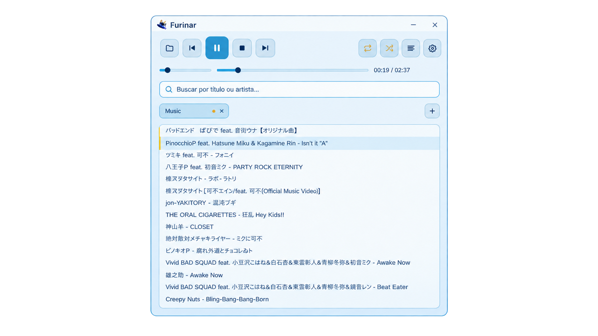
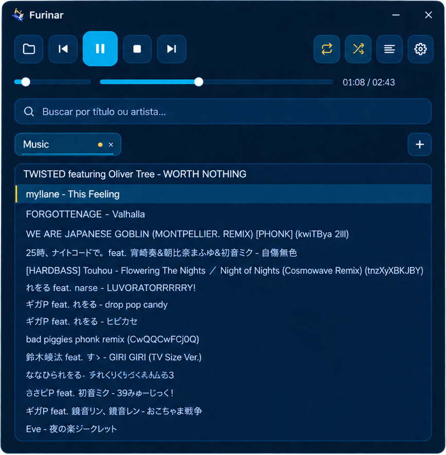
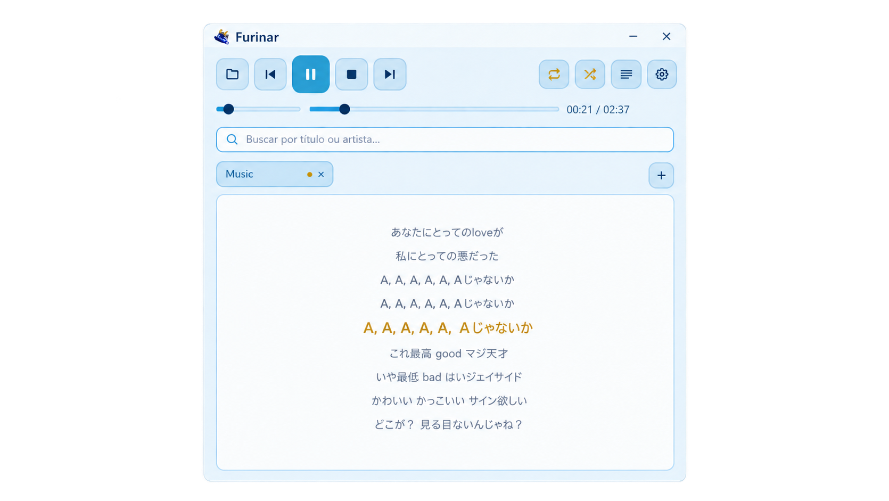

A light, fast, and beautiful audio player
Inspired by the Hydro Archon. Opens in milliseconds, uses 2–10 MB of RAM.

Opens in milliseconds and uses only 2–10 MB of RAM — less than a single browser tab.
MP3, WAV, FLAC, OGG/Vorbis, and M4A support out of the box.
Open as many folders as tabs. Switching tabs never interrupts playback.
Display synchronized lyrics via .lrc files, scrolling along with the track.
Switch instantly between beautiful light and dark themes.
Filter by title or artist, accent- and case-insensitive.
Space, arrows, Enter — full control without touching the mouse.
Media controls on Windows and Linux (MPRIS). Taskbar buttons on Windows.
Light Theme

Dark Theme

Synced Lyrics
Available for Windows and Linux
# Universal installer
curl -fsSL https://raw.githubusercontent.com/LokKol17/furinar/main/pkg/install.sh | bash
# Debian/Ubuntu
make deb && sudo dpkg -i dist/furinar_*.deb
# Fedora
make rpm && sudo rpm -i dist/rpm/RPMS/x86_64/*.rpm
# Arch/Manjaro
cd pkg/arch && makepkg -si